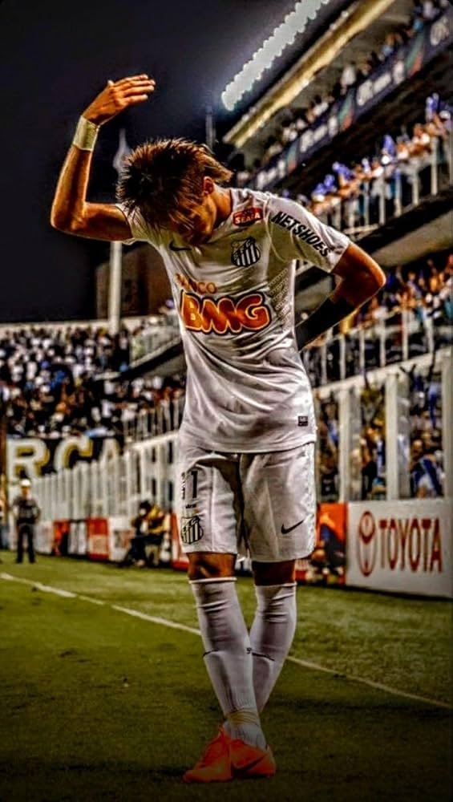
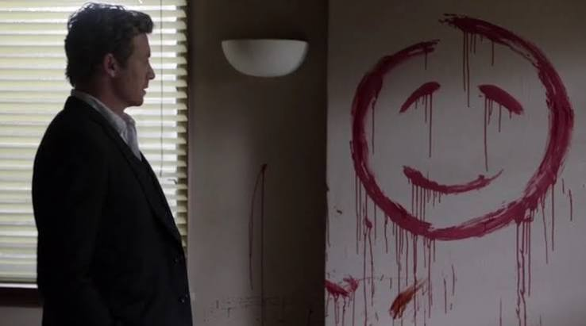
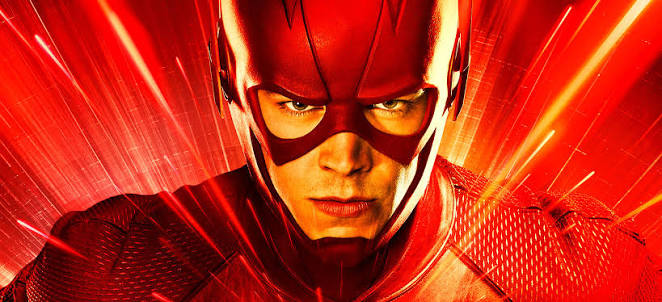
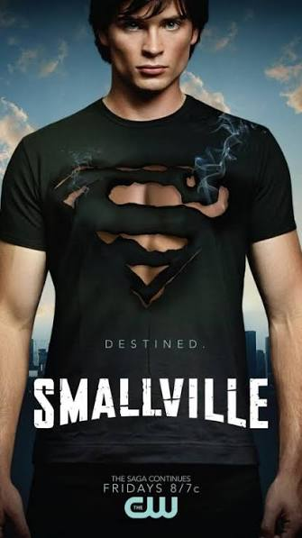
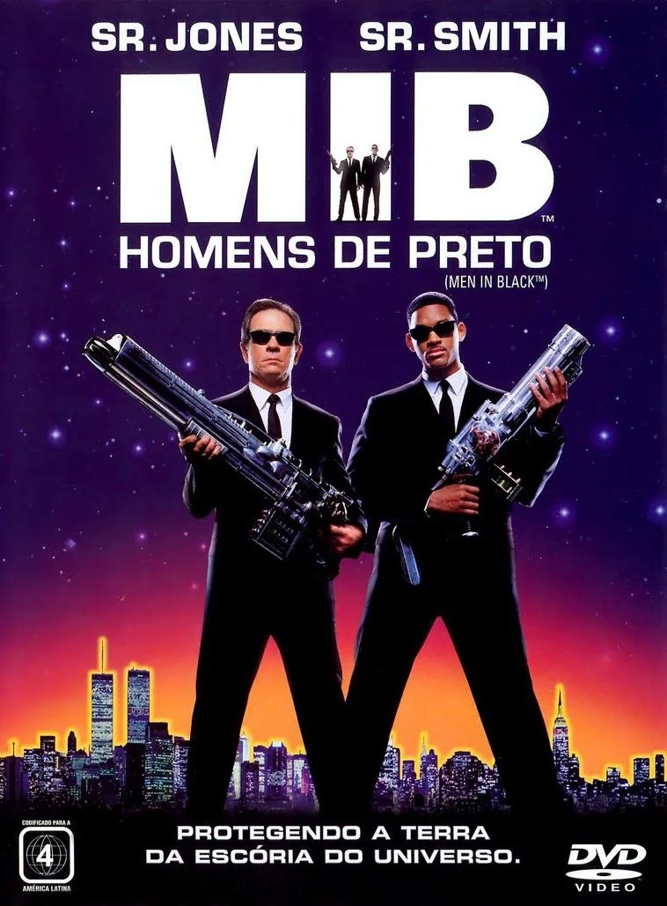
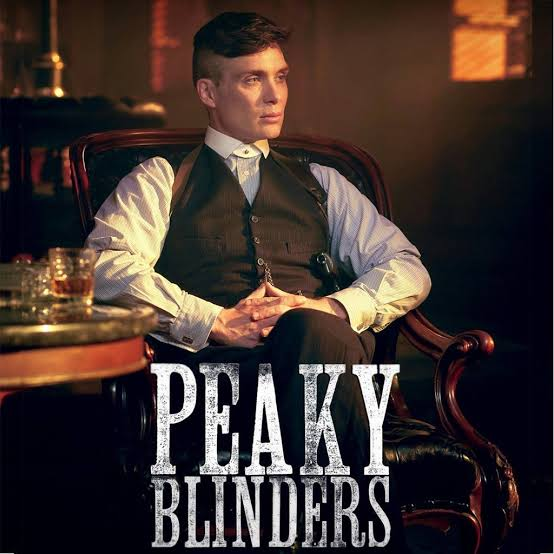

Meu Primeiro Paragrafo Em HTML

Clique aqui!
O red john sinopseRed John (ou John o Vermelho) é o principal antagonista e a força motriz de toda a trama da série policial O Mentalista (The Mentalist). Ele é um serial killer brilhante, sádico e extremamente esquivo que aterroriza o estado da Califórnia por décadas, deixando sempre a mesma assinatura gráfica nas cenas de seus crimes: um rosto sorridente desenhado na parede com o sangue das vítimas.A Origem da RivalidadeCinco anos antes do início da série, o protagonista Patrick Jane (interpretado por Simon Baker) trabalhava como um falso vidente e celebridade de TV. Durante uma entrevista, Jane zombou publicamente de Red John, descrevendo-o como um homem pequeno e solitário. Como retaliação por ter seu ego ferido, Red John assassinou brutalmente a esposa e a filha de Jane, deixando seu icônico rosto sorridente de sangue na parede do quarto delas.Consumido pelo luto e pelo desejo de vingança, Jane abandona a farsa de médium e passa a usar suas reais e extraordinárias habilidades de observação, dedução e manipulação psicológica como consultor da CBI (California Bureau of Investigation). O grande objetivo de sua vida passa a ser apenas um: rastrear, capturar e matar Red John.O Mistério e a Associação BlakeAo longo das temporadas, Red John se mostra um adversário formidável, quase mitológico, estando sempre um passo à frente de Jane e da polícia. O mistério por trás de sua identidade se aprofunda quando Jane descobre que o assassino não age sozinho.Red John é, na verdade, o líder da Associação Blake (Blake Association), uma gigantesca rede criminosa secreta infiltrada em todos os níveis do sistema de aplicação da lei da Califórnia, incluindo policiais, agentes do FBI, juízes e membros do alto escalão da própria CBI. Sob o lema "Tiger, Tiger" (uma referência ao poema de William Blake), os membros dessa seita se ajudavam mutuamente a acobertar crimes, garantindo que a verdadeira identidade de Red John permanecesse protegida por anos.A Revelação (Alerta de Spoiler)O arco do vilão chega ao ápice na primeira metade da sexta temporada. Após reduzir uma vasta lista para apenas 6 suspeitos principais, Patrick Jane finalmente desmascara o verdadeiro monstro.A Identidade: Red John era o Xerife Thomas McAllister (vivido por Xander Berkeley), um oficial aparentemente pacato do condado de Napa que havia aparecido logo no segundo episódio da primeira temporada.O Desfecho: No emocionante episódio intitulado "Red John", Jane consegue encurralar o xerife e, após um confronto cara a cara onde desmistifica a figura imponente do assassino, conclui sua vingança estrangulando Red John até a morte.Se você quiser saber mais sobre a série, posso te mostrar os melhores episódios focados no arco do Red John ou contar o que acontece com Patrick Jane depois que ele cumpre sua vingança. Qual caminho prefere seguir?AdoroCinemaO Mentalista - Série 2008 - AdoroCinemaA história principal do protagonista sobrespoiler: o assassinato da esposa e filha, e a grande procura pelo assassino das mesmas “...YouTube·Luke | Minha Vida É Uma SérieTHE TRUTH behind RED JOHN'S choice in The Mentalist30 de set. de 2025 — é um consenso que The Mentalist é responsável por uma das maiores. decepções das últimas. décadas nas séries com a revelação. do R...18:42The Mentalist WikiRed John | Wiki de The Mentalist | FandomConteúdo traduzido — Red John (abreviado como "RJ" ou "RJK" para "Red John Killer" nos arquivos do FBI e do CBI) é o pseudônimo do principal antagonist...Mostrar tudome de uma mini sinopseO Mentalista acompanha Patrick Jane, um ex-falso médium com extraordinário poder de observação que passa a trabalhar como consultor da polícia. Seu único objetivo é caçar e se vingar de Red John, um brilhante e sádico serial killer que assassinou brutalmente sua esposa e filha após ser provocado por Jane na TV.

É o super-herói mais rápido da DC Comics. Ele ganha o poder da supervelocidade após ser atingido por um raio e banhado por produtos químicos em um acidente de laboratório. Usando sua velocidade, ele combate o crime em Central City e protege a linha do tempo

Smallville acompanha a juventude de Clark Kent na cidade de Smallville, Kansas. A série mostra o herói lidando com poderes e dilemas da adolescência, sua amizade com Lex Luthor, o romance com Lana Lang e, nas temporadas finais, sua evolução até se tornar o Superman

Em MIB: Homens de Preto, uma agência secreta do governo monitora alienígenas que vivem secretamente na Terra. O veterano Agente K (Tommy Lee Jones) recruta o novato Agente J (Will Smith) para deter um terrorista intergaláctico que planeja destruir o planeta

Peaky Blinders é uma série britânica de drama histórico que acompanha a ascensão da família Shelby, uma gangue de Birmingham liderada pelo veterano de guerra Thomas Shelby (Cillian Murphy) após a Primeira Guerra Mundial. Conhecidos por costurar navalhas nas abas de seus bonés, os Shelby expandem seus negócios ilegais para o cenário político e econômico legítimo.